import matplotlib.pyplot as pltIntroduction to Python, Session 3: Data Visualization
Data Visualization with Python
Today’s goals:
- Introduce Python’s utilities for data visualization
- Learn how to customize several types of plots for publication-worthy data visualizations
- Explore online documentation
Workflow for Generating Figures
In general, the recipe for creating a figure is as follows:
- Generate or import the data to be plotted. This is generally a list of x values and a list of y values.
- Import matplotlib.pyplot to have access to the library and functions
- Generate the figure and axes
- Plot the data on the appropriate axis or axes using functions such as
plot(),scatter(),bar(), etc.. - Customize your plot using the built-in options for the function you used to plot (found in documentation).
- Render your plot using
show()and save or export it if you wish.
Matplotlib
Matplotlib is Python’s library for visualization. It has extensive documentation available online, including many tutorials. Within Matplotlib, you will mostly be working with pyplot to generate simple plots. You can view the documentation for pyplot here. Each function within pyplot has detailed descriptions of the arguments it takes - these will be very useful when you would like to customize your plots.
Importing matplotlib.pyplot
To import matplotlib.pyplot, simply type import matplotlib.pyplot as plt at the top of your code. You can then refer to the library as plt in your code as needed. Note that this isn’t strictly necessary, but you will find that this is an almost-universal naming convention (other libraries follow similar conventions too).
Figures, Plots, and Subplots
In Python, the best way to make a figure is by using the subplots() function to define a figure and set(s) of axes. The reason we use the subplots() function is that it makes it easy to add multiple plots/axes to a figure, which is commonly done in the visualization of scientific data. To define a figure, you can write
fig, ax = plt.subplots()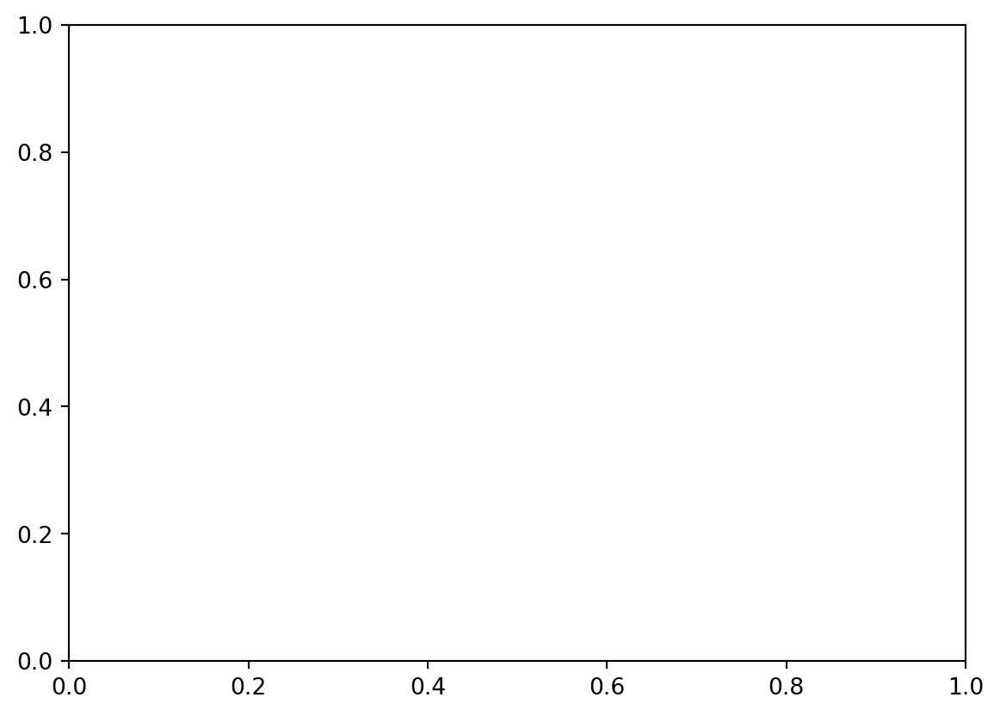
Figures, Plots, and Subplots
Let’s take a closer look:
fig, ax = plt.subplots()figis your figure (think: shape and size of your plot)axis your set of axes where you will plot your data and customize how the plot looks- You can have multiple axes in a single figure (which we will see later)
subplots()is a function which has multiple arguments that you can use to specify the size and shape of your figure, as well as other parameters for your axes.
Let’s visit the documentation and take a look at the options.
Figure Size
- You can specify the size of the figure using the
figsize=([width], [height])option (dimensions will be in inches) - At the bottom of your code, type
plt.show()to render your plot
fig, ax = plt.subplots(figsize=(2, 3))
plt.show()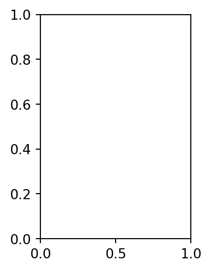
Multiple Subplots
Looking at the subplots() documentation again, we can see that we can specify the number and arrangement of subplots we want:
ncolsfor the number of columnsnrowsfor the number of rows
You can then define a corresponding axis for each subplot. Below is the code to generate two horizontally (fig1) and vertically (fig2) stacked subplots.
fig1, (ax1, ax2) = plt.subplots(nrows=1, ncols=2)
fig2, (ax3, ax4) = plt.subplots(nrows=2, ncols=1)Example with 4 Subplots
Let’s make a 2x2 grid of subplots. Note that we use nested brackets to specify the positions of each subplot within the figure.
fig, ((ax_nw, ax_ne), (ax_sw, ax_se)) = plt.subplots(nrows=2, ncols=2)
plt.show()Advanced Subplot Options
width_ratiosandheight_ratiosto adjust the relative sizes of rows and columnssharexandshareyto force subplots to share an x or y axisgridspecfor arbitrary/custom subplots (ex: different number of plots in each row)
Importing Data
Now that we can make figures and axes, let’s grab some data to plot. We are going to use some patient data that contains sex (‘Male’ or ‘Female’), weight (kg) and height (cm). We will then have 3 arrays of data to work with.
import numpy as np
sex, height, weight = np.genfromtxt('../data/height-weight.csv', unpack = True, delimiter = ",", skip_header=True, dtype=None, encoding='UTF-8')
print(sex)['Male' 'Male' 'Male' 'Male' 'Female' 'Female' 'Female' 'Female' 'Male'
'Male' 'Female' 'Female' 'Male' 'Female' 'Female' 'Male' 'Male' 'Male'
'Male' 'Male' 'Male' 'Female' 'Male' 'Female' 'Female' 'Male' 'Male'
'Male' 'Male' 'Male' 'Female' 'Male' 'Male' 'Female' 'Male' 'Female'
'Male' 'Female' 'Male' 'Female' 'Male' 'Female' 'Female' 'Female'
'Female' 'Female' 'Female' 'Female' 'Male' 'Female' 'Female' 'Female'
'Female' 'Female' 'Male' 'Female' 'Female' 'Female' 'Male' 'Male'
'Female' 'Male' 'Female' 'Male' 'Male' 'Female' 'Male' 'Female' 'Male'
'Female' 'Female' 'Male' 'Male' 'Female' 'Male' 'Female' 'Male' 'Male'
'Female' 'Female' 'Female' 'Female' 'Male' 'Female' 'Female' 'Female'
'Female' 'Male' 'Female' 'Male' 'Male' 'Male' 'Female' 'Male' 'Female'
'Female' 'Female' 'Female' 'Female' 'Female']Scatter Plots
Scatter plots are used for displaying discrete data points, where each point has a set of coordinates \((x,y)\). If you want to plot data points \((x_1, y_1), (x_2, y_2) ... (x_n, y_n)\) from lists \(x = (x_1, x_2,...,x_n)\) and \(y = (y_1, y_2,...,y_n)\), you can use the scatter() function, applied to the axis you want to plot on.
Let’s create a plot of height vs weight using our patient data.
fig, ax = plt.subplots(figsize=(3, 3))
ax.scatter(x=weight, y=height)
plt.show()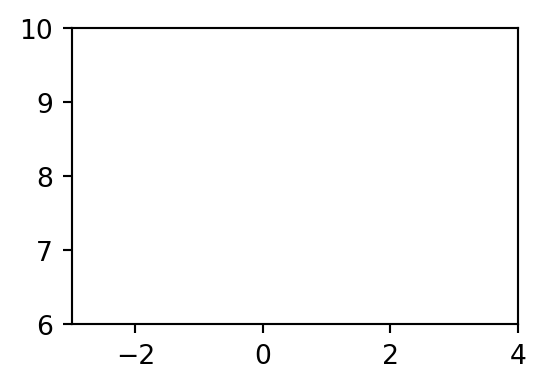
A Note on Error Bars
Confusingly, matplotlib has a separate function to create a scatter plot with error bars. To do so, you can use the errorbar() function. This takes the usual x and y arguments for coordinates, as well as additional xerr and yerr arguments for the error bar values. It also contains similar options to scatter() for customizing the data points and error bars.
Customizing Scatter Plots
Take a look at the options in the scatter() documentation. Soem common parameters you could use to customize your scatter plot are:
s: marker size in points ^2 (don’t ask why…).color (c): marker color. Enter a string that could include a named color, RBG code, or hex color code. Find a full guide to specifying colors here.marker: marker style. Choose between a variety of preset options, the default being ‘o’ for circles. View the full list of options here.linewidths: width of the marker outline. Enter number in pts.edgecolors: color of the marker outline. Enter as a string, similar to the value ofc.alpha: transparency (0 = transparent, 1 = opaque)
Named Colors
Python has a number of named colors. You can also specify hex or RGB color codes as strings.

Using these colors and the list of parameters below, take a second to customize your plot of weight vs height.
s: marker size in points ^2 (don’t ask why…).color (c): marker color. Enter a string that could include a named color, RBG code, or hex color code. Find a full guide to specifying colors here.marker: marker style. Choose between a variety of preset options, the default being ‘o’ for circles. View the full list of options here.linewidths: width of the marker outline. Enter number in pts.edgecolors: color of the marker outline. Enter as a string, similar to the value ofc.alpha: transparency (0 = transparent, 1 = opaque)
Custom Plot
fig, ax = plt.subplots(figsize=(3, 3))
ax.scatter(weight, height, s=49, color="lavender", marker="d", linewidths=1, edgecolors="mediumpurple")
plt.show()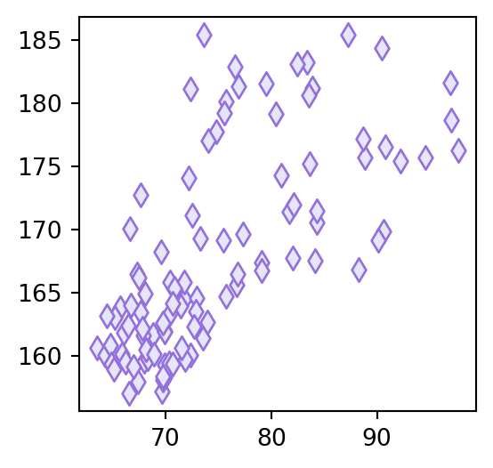
Titles and Axis Labels
Let’s add a title and some axis labels to our plot. To do this, we can use the following functions:
ax.set_title("My Title")
ax.set_xlabel("X Data Label")
ax.set_ylabel("Y Data Label")Be sure to add all of this code before the plt.show() line, which renders the plot. Anything after show() will not be applied to the figure you see.
Add Your Labels
fig, ax = plt.subplots(figsize=(3, 3))
ax.scatter(weight, height, s=49, color="lavender", marker="d", linewidths=1, edgecolors="mediumpurple")
ax.set_title("Height vs Weight")
ax.set_xlabel("Weight (kg)")
ax.set_ylabel("Height (cm)")
plt.show()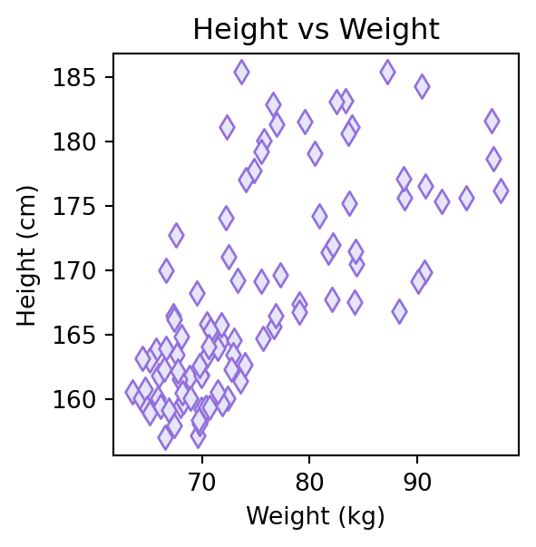
Manipulating our Data
Let’s separate our weight and height data by sex. Can you see what the code below does?
height_m = []
height_f = []
weight_m = []
weight_f = []
for i in range(len(sex)):
if sex[i] == 'Male':
height_m.append(height[i])
weight_m.append(weight[i])
else:
height_f.append(height[i])
weight_f.append(weight[i])Plotting a Continuous Function
Another common type of plot is a line plot. Line plots can be created using the plot() function. The essential arguments of plot() are the lists of arrays of x and y values.
Let’s use plot() to add a line of best fit to out weight vs height data for both sexes. First, we will create a new figure and plot the data using scatter(), as before.
# Generate figure and axes
fig, (ax1, ax2) = plt.subplots(ncols = 2, nrows = 1, figsize=(10, 4))
# Plot data
ax1.scatter(weight_m, height_m, c = 'royalblue', alpha = 0.5)
ax1.scatter(weight_f, height_f, c = 'magenta', alpha = 0.5)
ax1.set_title("Height vs Weight")
ax1.set_xlabel("Weight (kg)")
ax1.set_ylabel("Height (cm)")
plt.show()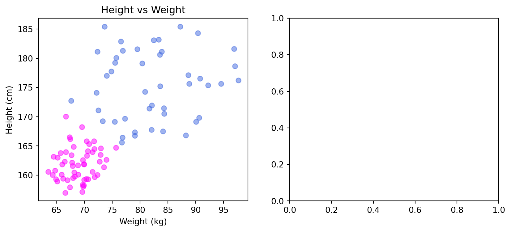
Lines of Best Fit
Lines of best fit (also called linear regressions) are useful tools for finding trends in scattered data. A line of best fit will follow the equation
\(y(x) = mx+b\),
where \(m\) is the slope and \(b\) is the intercept. Today we will be using curve_fit() from the scipy.optimize package to generate a best fit line for the Male and Female height vs weight data.
curve_fit() takes as input:
f: A function \(f(x, m, b)\) (which we will define to be a line, but can be any single-variable function with an arbitrary number of fit parameters)xdataandydata, the data points we are fitting to (weight and height arrays)- Other optional parameters for weighting, initial guesses, etc.
curve_fit() returns as outputs:
- Optimal parameters of \(m\) and \(b\) (or whichever fit parameters you have defined in your function)
- Other information about the quality of the fit (covariance matrix)
Let’s give it a try!
from scipy.optimize import curve_fit
# define the function with the independent variable first, followed by fit parameters
def line(x, m, b):
return m * x + b
popt_m, pcov_m = curve_fit(f=line, xdata=weight_m, ydata=height_m)
popt_f, pcov_f = curve_fit(f=line, xdata=weight_f, ydata=height_f)
print(popt_m)[8.17836998e-02 1.68572508e+02]Plotting the Lines 1
Now that we have the slopes and intercepts of each line of best fit, we can use plot() to plot them on our axes (ax1). plot() behaves exactly like scatter, in the sense that it accepts a list of x values and a list of y values. However, it will just plot these coordinates and connect them with a straight line.
First, we need to make our list of x coordinates. Let’s make a list using the np.linspace() function. np.linspace() takes 3 arguments: start, stop, and num, and returns a list that begins at start and ends at stop with num evenly-spaced points.
Let’s define our x values:
x = np.linspace(start=60, stop=100, num=100)
print(x)[ 60. 60.4040404 60.80808081 61.21212121 61.61616162
62.02020202 62.42424242 62.82828283 63.23232323 63.63636364
64.04040404 64.44444444 64.84848485 65.25252525 65.65656566
66.06060606 66.46464646 66.86868687 67.27272727 67.67676768
68.08080808 68.48484848 68.88888889 69.29292929 69.6969697
70.1010101 70.50505051 70.90909091 71.31313131 71.71717172
72.12121212 72.52525253 72.92929293 73.33333333 73.73737374
74.14141414 74.54545455 74.94949495 75.35353535 75.75757576
76.16161616 76.56565657 76.96969697 77.37373737 77.77777778
78.18181818 78.58585859 78.98989899 79.39393939 79.7979798
80.2020202 80.60606061 81.01010101 81.41414141 81.81818182
82.22222222 82.62626263 83.03030303 83.43434343 83.83838384
84.24242424 84.64646465 85.05050505 85.45454545 85.85858586
86.26262626 86.66666667 87.07070707 87.47474747 87.87878788
88.28282828 88.68686869 89.09090909 89.49494949 89.8989899
90.3030303 90.70707071 91.11111111 91.51515152 91.91919192
92.32323232 92.72727273 93.13131313 93.53535354 93.93939394
94.34343434 94.74747475 95.15151515 95.55555556 95.95959596
96.36363636 96.76767677 97.17171717 97.57575758 97.97979798
98.38383838 98.78787879 99.19191919 99.5959596 100. ]Plotting the Lines 2
Now that we have our x values, we can plug them into the linear function we have defined, line(x, m, b), including the values for the fit parameters we found using curve_fit(). Let’s define our y values to plot in the following way:
y_male = line(x, popt_m[0], popt_m[1])
y_female = line(x, popt_f[0], popt_f[1])Plotting the Lines 3
Finally, we can put it all together. Take the code we have created for our 1x2 subplot and add in the lines of best fit on ax1.
# Generate figure and axes
fig, (ax1, ax2) = plt.subplots(ncols = 2, nrows = 1, figsize=(10, 4))
# Plot data
ax1.scatter(weight_m, height_m, c = 'royalblue', alpha = 0.5)
ax1.scatter(weight_f, height_f, c = 'magenta', alpha = 0.5)
ax1.plot(x, y_male, c = 'royalblue')
ax1.plot(x, y_female, c = 'magenta')
ax1.set_title("Height vs Weight")
ax1.set_xlabel("Weight (kg)")
ax1.set_ylabel("Height (cm)")
plt.show()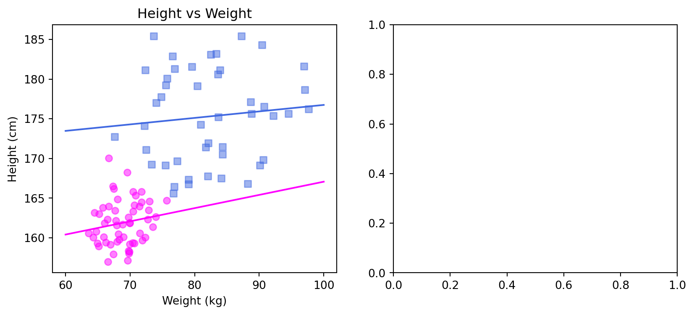
Adding a Legend
Finally, we would like to add a legend to this plot now that it contains multiple datasets. We can do this using the legend() function. By adding a parameter called label as a string in each plot we would like to include in the legend, and then calling the legend() function, we will automatically generate a legend. You can pass arguments to this function to specify the formatting and location of the legend, but we’ll skip that part today.
# Generate figure and axes
fig, (ax1, ax2) = plt.subplots(ncols = 2, nrows = 1, figsize=(10, 4))
# Plot data
ax1.scatter(weight_m, height_m, c = 'royalblue', alpha = 0.5, label = 'Male')
ax1.scatter(weight_f, height_f, c = 'magenta', alpha = 0.5, label='Female')
ax1.plot(x, y_male, c = 'royalblue')
ax1.plot(x, y_female, c = 'magenta')
ax1.set_title("Height vs Weight")
ax1.set_xlabel("Weight (kg)")
ax1.set_ylabel("Height (cm)")
ax1.legend()
plt.show()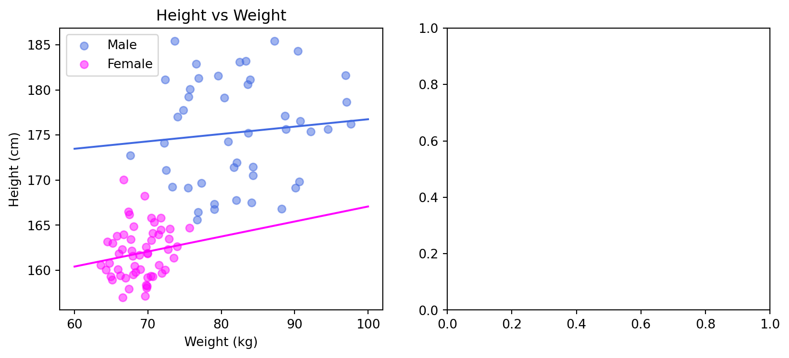
Histograms
Another common plot type is a histogram. We are going to put a histogram of height distributions by sex in the blank subplot. We will do this using the plt.hist() function. At a minimum, hist() takes the data points you wish to plot as an argument. You may also specify the bins argument as an integer (the default is 10). Let’s take our previous plot and add histograms for the male and female height distributions, each with 5 bins.
# Generate figure and axes
fig, (ax1, ax2) = plt.subplots(ncols = 2, nrows = 1, figsize=(10, 4))
# Plot data
ax1.scatter(weight_m, height_m, c = 'royalblue', alpha = 0.5, label = 'Male')
ax1.scatter(weight_f, height_f, c = 'magenta', alpha = 0.5, label='Female')
ax1.plot(x, y_male, c = 'royalblue')
ax1.plot(x, y_female, c = 'magenta')
ax1.set_title("Height vs Weight")
ax1.set_xlabel("Weight (kg)")
ax1.set_ylabel("Height (cm)")
ax1.legend()
ax2.hist(height_m, bins=5, color = 'royalblue', alpha = 0.5)
ax2.hist(height_f, bins=5, color = 'magenta', alpha = 0.5)
plt.show()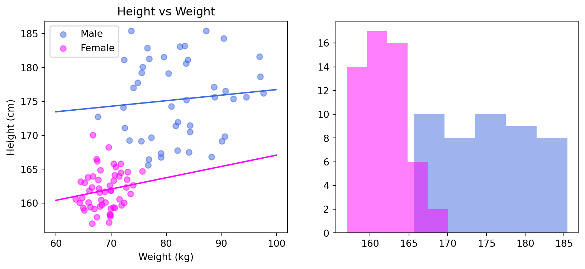
Finishing Touches
Finally, let’s add a legend, axis labels, and title to the histogram.
# Generate figure and axes
fig, (ax1, ax2) = plt.subplots(ncols = 2, nrows = 1, figsize=(10, 4))
# Plot data
ax1.scatter(weight_m, height_m, c = 'royalblue', alpha = 0.5, label = 'Male')
ax1.scatter(weight_f, height_f, c = 'magenta', alpha = 0.5, label='Female')
ax1.plot(x, y_male, c = 'royalblue')
ax1.plot(x, y_female, c = 'magenta')
ax1.set_title("Height vs Weight")
ax1.set_xlabel("Weight (kg)")
ax1.set_ylabel("Height (cm)")
ax1.legend()
ax2.hist(height_m, bins=5, color = 'royalblue', alpha = 0.5, label = 'Male')
ax2.hist(height_f, bins=5, color = 'magenta', alpha = 0.5, label = 'Female')
ax2.set_ylabel('Count')
ax2.set_xlabel('Height (cm)')
ax2.legend()
ax2.set_title('Height Distributions by Sex')
plt.show()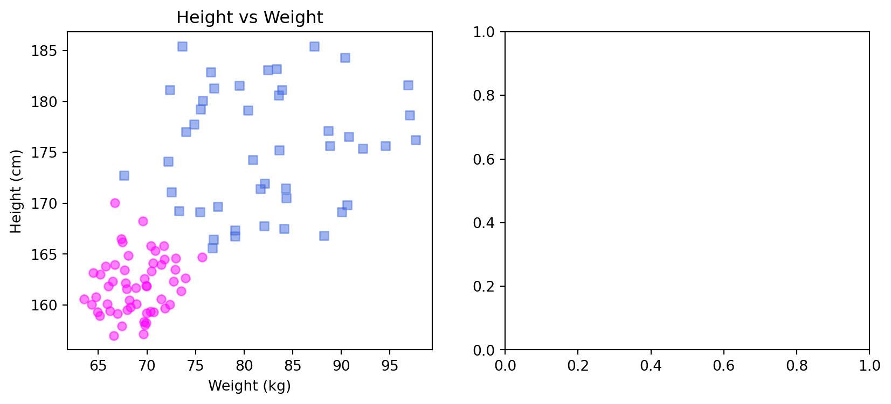
Seaborn
matplotlib.pyplot is the bread and butter of data visualization in Python, and allows you near-arbitrary degrees of customization for your plots. However, the seaborn library was developed using matplotlib to make nice-looking plots with less code. We are going to use it to make a violin plot, because that is something that matplotlib.pyplot does not do a nice job of.
Violin Plots
We are going to make a violin plot of our patient weight distributions by sex. To do this, we will use the violinplot() function from the seaborn library.
import seaborn as sns
fig, ax = plt.subplots(figsize = (4, 4))
sns.violinplot(weight_m, ax = ax)<Axes: >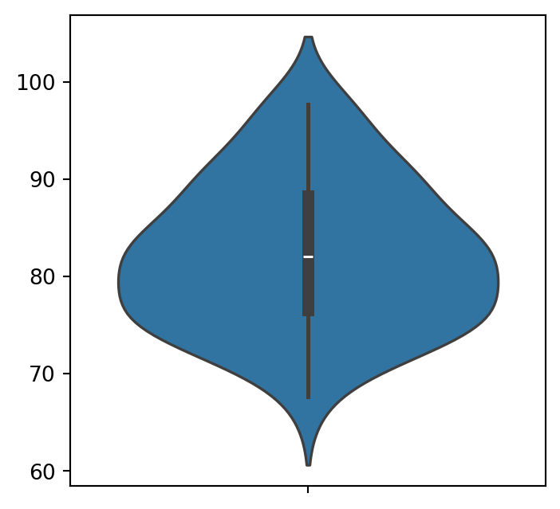
Make it Nice
Let’s add the other dataset and make it nicer.
fig, ax = plt.subplots(figsize = (4, 4))
sns.violinplot(weight_m, ax = ax, color = 'royalblue', alpha = 0.5, linewidth=0, label = "Male")
sns.violinplot(weight_f, ax = ax, color = 'magenta', alpha = 0.5, linewidth=0, label = "Female")
ax.set_ylabel('Weight (kg)')
ax.set_title("Weight Distribution by Sex")
ax.legend()
plt.show()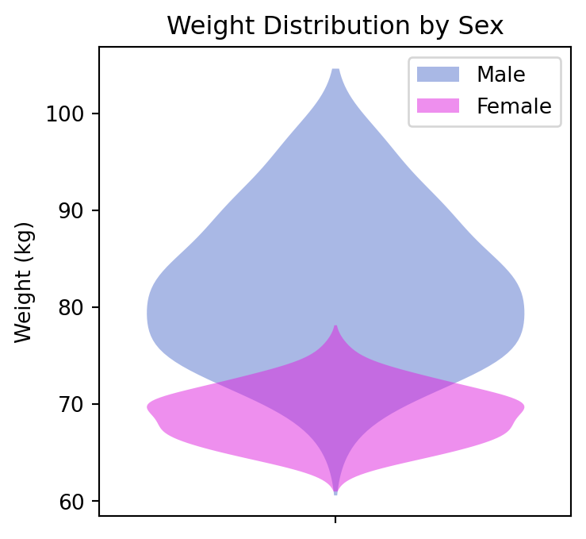
Applications with Seaborn
Seaborn is used a lot in the context of data science, and it plays very nicely with Pandas (another library used for manipulating tabular data).
Saving and Exporting
Now that we have created several figures, we may want to save and export them. To do this, we will apply the savefig() function to our figure. This function takes your desired filepath as an input, as well as other optional parameters such as dpi (resolution), sizing, and transparency. Let’s save our most recent figure. We will also use fig.tight_layout() to remove any added white space and ensure that all nothing is cut off.
fig.tight_layout()
fig.savefig("my_violin_plot.pdf", bbox_inches = "tight")Color Maps
Rather than using a single color to plot your data, you may want to use a color map. This is particularly true for things like heatmaps, or when you are displaying an image. To do this, you can use existing colormaps within matplotlib, or create your own.
fig, ax = plt.subplots(figsize = (5,4))
x = np.linspace(-5, 5, 200)
y = np.linspace(-5, 5, 200)
xx, yy = np.meshgrid(x, y)
zz = np.cos(xx)*np.sin(yy)
im = ax.pcolormesh(zz, cmap='viridis')
fig.colorbar(im, ax=ax)
plt.show()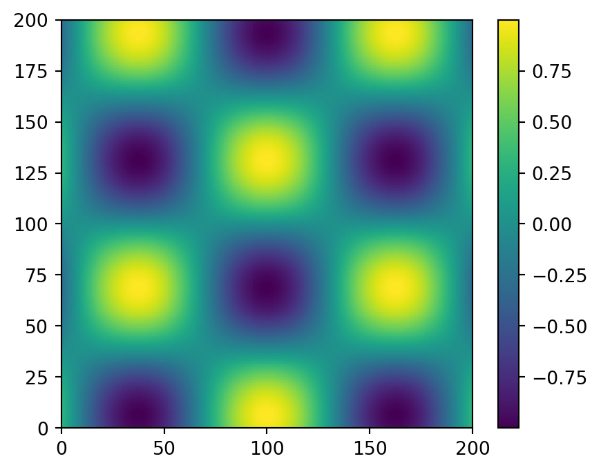
Accessible Color Maps
When you are using colors to plot your data, and in particular when you are using color maps, it is important to choose one that is faithful to the scale, and that is accessible to those with common forms of color blindness. It turns out that people have thought about this problem a lot and have come up with some color maps that do a great job at maximizing these properties.
My personal favourite is called viridis (watch the launch video here - surprisingly interesting), but there is actually a selection of these schemes available.

It’s also important to note that some color schemes that may seem natural to use (black to white and rainbow) actually tend to skew our perceptions of the data values and therefore are not recommended.

Example: Scatter Plot with Color Map
Let’s make a scatter plot with weight vs height again, but make the color of the points defined by the ratio of weight to height.
# Generate figure and axes
fig, ax = plt.subplots(figsize=(6, 4))
ratio = weight/height
im = ax.scatter(weight, height, c=ratio, cmap='viridis')
fig.colorbar(im, ax=ax)
ax.set_xlabel("Weight (kg)")
ax.set_ylabel("Height (cm)")
ax.set_title("Weight vs Height")
plt.show()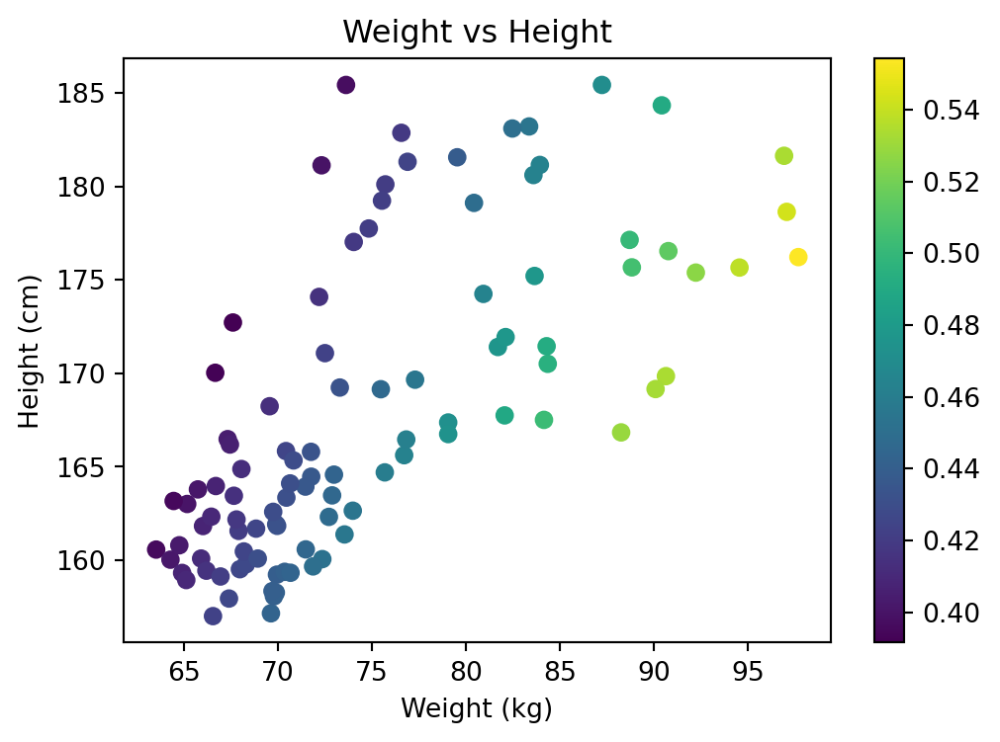
Plotting with Functions
We have learned how to write many lines of code to generate and customize a single figure. This is nice, but we want to be practical. In fact, you can put all of your plotting code inside a function that will allow you to automate the production of figures within your workflows. Let’s write a function called plot_data() that can recreate the previous plot and accepts weight, height and filename as its arguments.
This way, you can call this function with different datasets and it will return a consistently-formatted plot for each.
def plot_data(weight, height, filename):
fig, ax = plt.subplots(figsize=(6, 4))
ratio = weight/height
im = ax.scatter(weight, height, c=ratio, cmap='viridis')
fig.colorbar(im, ax=ax)
ax.set_xlabel("Weight (kg)")
ax.set_ylabel("Height (cm)")
ax.set_title("Weight vs Height")
fig.tight_layout()
fig.savefig(filename + ".pdf", bbox_inches = "tight")